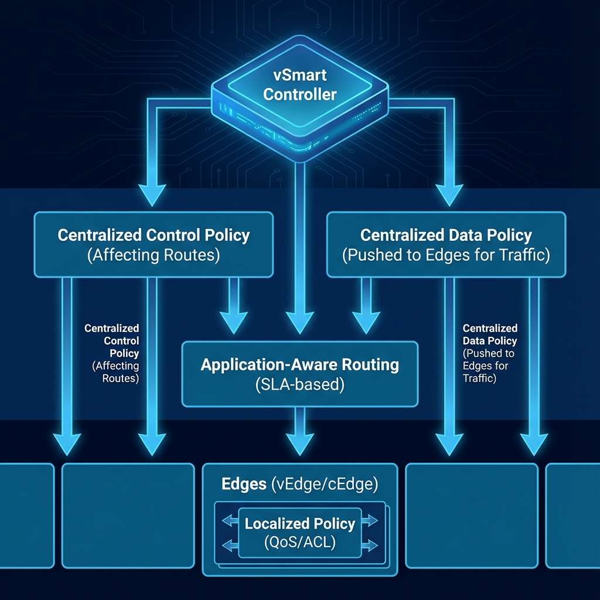

Chapter 6
Introduction to Cisco Catalyst SD-WAN Policies
Learning Objectives
- Memahami jenis-jenis policies dalam SD-WAN
- Menjelaskan perbedaan centralized dan localized policies
- Memahami struktur dan komponen policy
- Mengidentifikasi use cases untuk setiap policy type

Gambar 6.1 - Jenis-jenis policy dalam SD-WAN: Centralized Control, Data, AAR, dan Localized
Policy Types Overview
SD-WAN policies mengontrol bagaimana traffic ditangani dalam overlay network.
| Policy Type | Applied At | Use Case |
|---|---|---|
| Centralized Control Policy | vSmart | Route filtering, topology control |
| Centralized Data Policy | vSmart → Edge | Traffic steering, DSCP marking |
| Application-Aware Policy | Edge devices | SLA-based routing |
| Localized Policy | Local edge | QoS, ACL, route policies |
Centralized vs Localized
Centralized
Defined di vManage, applied ke vSmart atau pushed ke edges
Localized
Defined dan applied locally di edge device
Centralized Policy Benefits:
- Consistent policy across all sites
- Single point of management
- Can affect routing decisions network-wide
Localized Policy Benefits:
- Site-specific customization
- Lower latency (processed locally)
- Works even if controller connectivity lost
Policy Building Blocks
Policy Components:
📋 Lists
- Site Lists - Group of site IDs
- VPN Lists - Group of VPN IDs
- Prefix Lists - IP prefixes
- Application Lists - Applications/protocols
🔍 Match Conditions
- Source/Destination prefix
- Application
- DSCP value
- Protocol/Port
⚡ Actions
- Accept/Reject
- Set parameters (DSCP, next-hop)
- Redirect to service
- Traffic steering